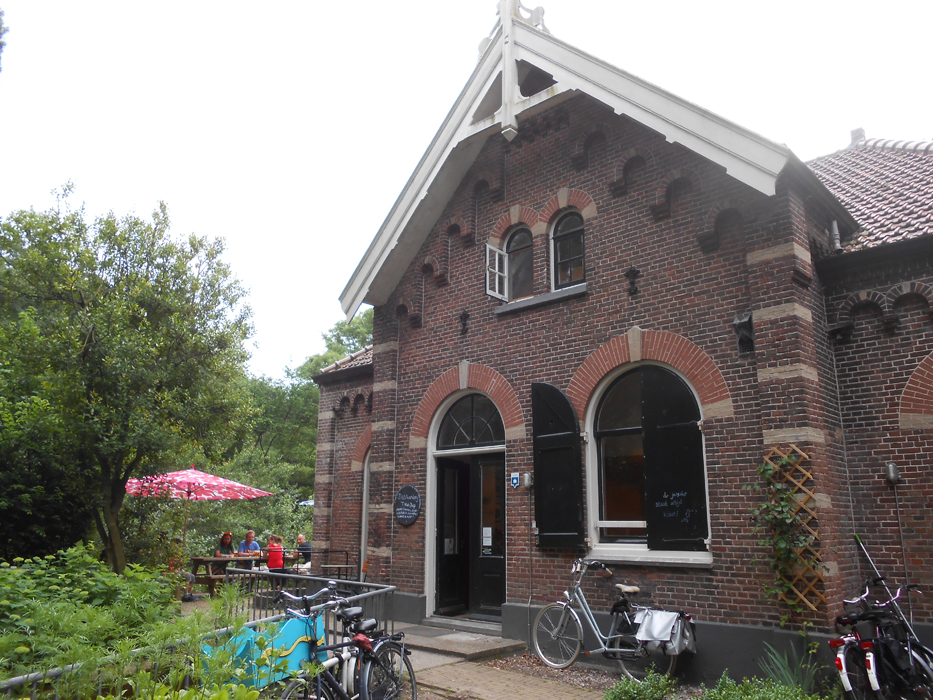

De distilleerderij
In het voormalige gemaal van de Oetewaler Polder
Sinds 24 juni 2010 is ’t Nieuwe Diep in bedrijf, in het voormalige gemaal van de Oetewaler Polder in het Flevopark. De distilleerderij is genoemd naar het water aan de uitloop van het gemaal. Het gemaal is gebouwd in 1880 en door huisbaas Stadsherstel gerestaureerd in 2009 en 2010.
In de stokerij staan de ketels van de voormalige distilleerderij Hesp aan de Weesperzijde te Amsterdam en een tweelingketel die is overgenomen van de firma Bols. De ketel waarin het graanbeslag wordt gemaakt en vergist, is afkomstig van de vroegere jamfabriek van Flipje in Tiel.
We vervaardigen een 100-tal producten, voor zover mogelijk van biologische grondstoffen (zie de productoverzichten). In het proeflokaal kunt u ze proeven.